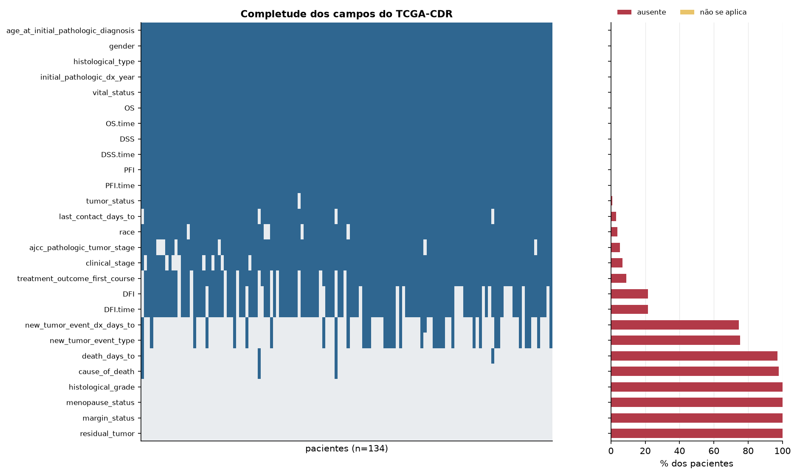
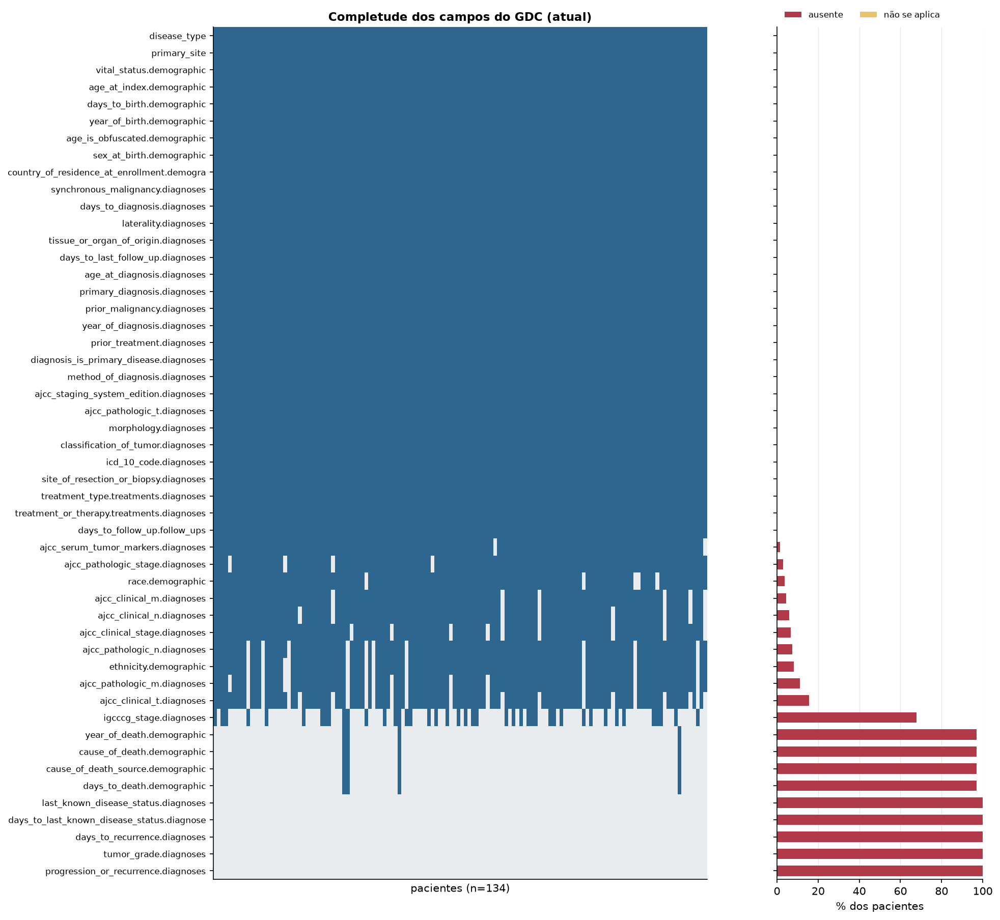
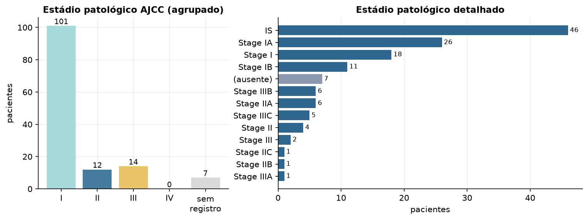
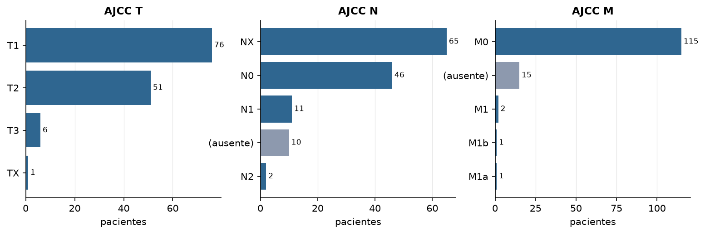
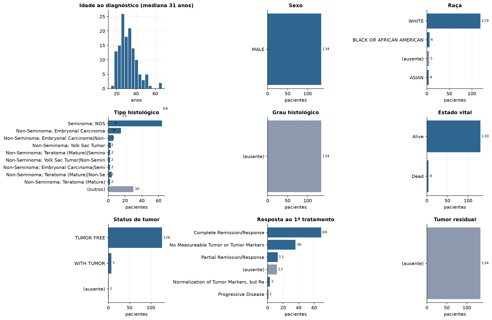
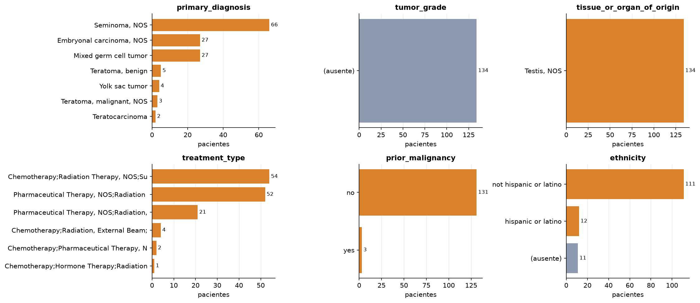
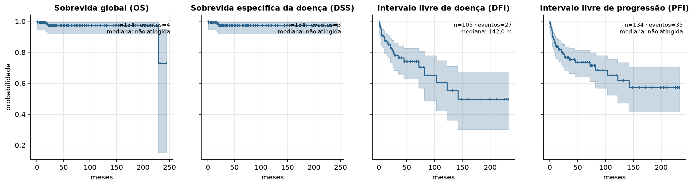
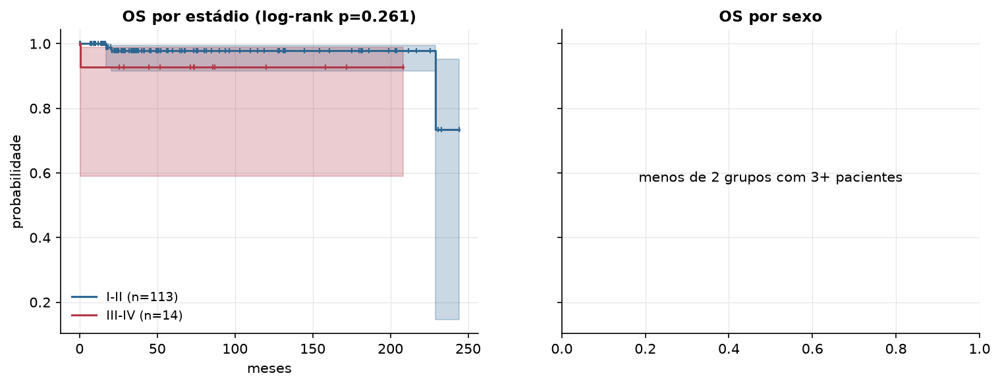

TGCT · Dados clínicos
TCGA-CDR (PanCanAtlas) e metadados atuais do GDC · gerado em 22/10/2026 04:47
134pacientes
31 anosidade mediana
4óbitos
41,4 mesesseguimento mediano
127com estádio AJCC
Fonte: TCGA-CDR, Liu et al., Cell 2018 (Survival_SupplementalTable_S1); GDC: API do GDC (/cases)
Para sobrevida, use as colunas OS/DSS/DFI/PFI do TCGA-CDR, que foram curadas e harmonizadas. Liu et al. recomendam PFI e OS para a maioria dos cânceres e alertam para seguimento curto em alguns tipos.
Principais resultados
- A coorte TGCT do PanCanAtlas tem 134 pacientes com dados clínicos curados (TCGA-CDR).
- 127 de 134 pacientes (94,8%) têm estádio patológico AJCC; o grupo mais comum é o estádio I (n=101).
- Sobrevida global: 4 óbitos em 134 pacientes; a mediana não foi atingida e o seguimento mediano é de 41,4 meses.
- Comparando estádios I-II com III-IV, o log-rank dá p=0.261 (sem diferença significativa a 5%).
- Campos do CDR com mais de 50% de ausência:
histological_grade,menopause_status,death_days_to,cause_of_death,new_tumor_event_type,new_tumor_event_dx_days_to,margin_status,residual_tumor. - 11 campos do CDR estão completos para todos os pacientes, incluindo
age_at_initial_pathologic_diagnosis,gender,histological_type,initial_pathologic_dx_year,vital_status,OS.
Completude dos dados clínicos

Percentual ausente por campo (TCGA-CDR)
| campo | % ausente | % não se aplica |
|---|---|---|
| histological_grade | 100 | 0 |
| menopause_status | 100 | 0 |
| margin_status | 100 | 0 |
| residual_tumor | 100 | 0 |
| cause_of_death | 97.8 | 0 |
| death_days_to | 97 | 0 |
| new_tumor_event_type | 75.4 | 0 |
| new_tumor_event_dx_days_to | 74.6 | 0 |
| DFI | 21.6 | 0 |
| DFI.time | 21.6 | 0 |
| treatment_outcome_first_course | 9 | 0 |
| clinical_stage | 6.7 | 0 |
| ajcc_pathologic_tumor_stage | 5.2 | 0 |
| race | 3.7 | 0 |
| last_contact_days_to | 3 | 0 |
| tumor_status | 0.7 | 0 |
| age_at_initial_pathologic_diagnosis | 0 | 0 |
| histological_type | 0 | 0 |
| gender | 0 | 0 |
| vital_status | 0 | 0 |
| initial_pathologic_dx_year | 0 | 0 |
| OS | 0 | 0 |
| OS.time | 0 | 0 |
| DSS.time | 0 | 0 |
| DSS | 0 | 0 |
| PFI | 0 | 0 |
| PFI.time | 0 | 0 |

Estádio patológico


Distribuição dos metadados


Sobrevida

